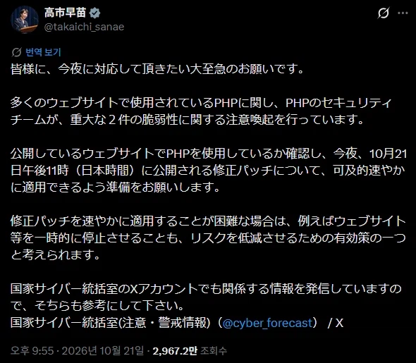
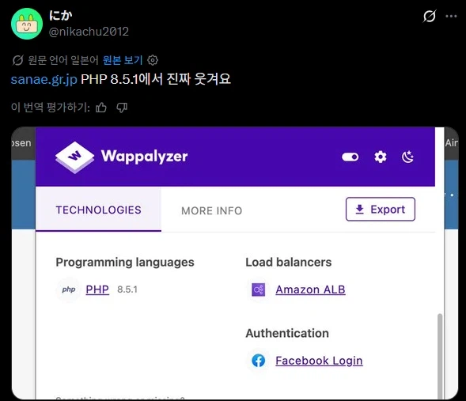
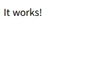

정작 본인은 업데이트 안함

바로 사이트 털려서 내용 다날아가고 동작함이라는 글귀만 남음


정작 본인은 업데이트 안함

바로 사이트 털려서 내용 다날아가고 동작함이라는 글귀만 남음
내용 있다가 초기셋팅으로 바뀐거면 털린거 맞지 않음?
php연동되는 부분만 제거하고 업데이트하고 붙일 가능성이 제일 큼. 단순히 해킹해서 셋팅을 지울순 있긴한데 그럴 필요가 없는정도
패치 준비하려고 서비스 중단한곳이 많음.
저건 그냥 중단 문구일걸.
어제 오후 11시에 따끈따끈한 수정버전(8.2.35, 8.3.36, 8.4.27, 8.5.12)이 공개되었음. 다만, 8.1버전 이하는 지원 기간이 종료되었기 때문에 수정 버전이 공개되지 않았음. 다만, PHP 7.4, PHP 8.0 및 PHP 8.1에 대한 최소한의 소스 백포트를 제공한다고 함.
php4, 5 등 구버전 php는 죽는 게 답이고, 7.4에서 8.2는 경고 좀 뜨긴한데 앵간하면 사용은 할 수 있을 거 같음
일하라는 글귀가 아니라
동작한다 작동한단 진짜 되네 같은 의미야
일 하라가 아니라 동작 함 아니냐
고침
일하라가 아니고 동작 한다 되네 이런거
서버 계정 권한 탈취여서 다 날리고 해당 호스팅 경로에 아무것도 설치 안한 웹서버 웰컴 페이지로 보여지는거임
걸레년이라서 본인껀 환영
나는 사나에~
it just work
업데이트중인거 아닌가
php를 아직도 쓰는구나
나도 고쳐야 하니까 빨리 해결해달라고 !!!
저건 털린건아니고 초기셋팅 문구임